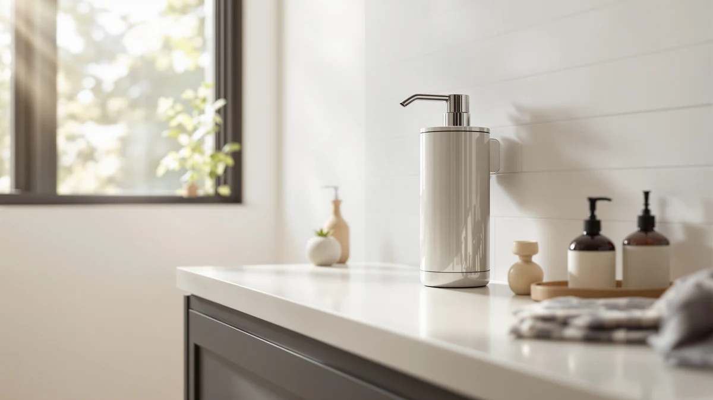

The Best Wall-mounted Foam Soap Dispensers (2026)
Prices and picks verified as of August 2026. Independent, reader-supported reviews.


Quick Answer
After comparing seven wall-mounted and countertop foam soap dispensers on sensor speed, foam-level control, and price, the OHIFAST Automatic Foaming Soap Dispenser ($19.99) is the best wall-mounted foam soap dispenser for most bathrooms and kitchens. It reads a hand from nearly three inches away, adjusts across six foam levels, and carries an IPX5 rating for wet counters. If you want a simpler option with no batteries, the YAUKPH teak wood pump covers the basics for under ten dollars.
Our pick: OHIFAST Automatic Foaming Soap Dispenser — $19.99 Check Price on Amazon
Bottom line: our top pick is the OHIFAST Automatic Foaming Soap Dispenser Touchless at $15.99. The best budget option is the YAUKPH Matte Black Teak Wood Hand Soap Dispenser at $9.99.
Things to Know Before You Buy
- Not every "wall mounted" listing actually mounts. The best wall-mounted foam soap dispensers, like the OHIFAST and Cheftick, list real mounting hardware and a 12.8oz tank built for a bracket. The GOJO LTX-12 is the commercial dispenser you've likely seen bolted to a restroom wall. The rest are countertop pumps you can still tuck onto a shelf near the sink.
- Touchless sensors save soap and mess, but they need power. Four of these seven picks use an infrared sensor with either USB charging or a battery, so budget a few minutes a month for topping off the charge.
- Foam-level adjustment matters more than it sounds. A dispenser stuck on one setting either drowns your hands in foam or leaves you pumping twice, so we favored picks with four to six adjustable levels.
- Manual pumps still have a place. If you would rather skip batteries and sensors altogether, the two YAUKPH picks give you a foam-style push pump with a teak wood or bamboo accent instead.
- Capacity ranges from 8.5 ounces to 1200 mL here. A busy kitchen sink will empty the smaller bottles faster than a single bathroom will, so match the tank size to how many hands wash there daily.
The best wall-mounted foam soap dispensers turn a daily chore into a five-second habit: you wave a hand, get a light cloud of foam, and never touch a slimy pump handle again. A dispenser bolted near the sink also keeps counters clear, which matters in a small bathroom or a kitchen where every inch of space earns its keep. Not every dispenser on the market actually mounts to a wall, though, and the gap between marketing copy and a real bracket-ready design is exactly where shoppers get burned. We wanted to know which foam dispensers deliver on that promise and which ones are countertop pumps dressed up with the phrase "wall mounted" in the title.
We compared seven foam soap dispensers, from touchless infrared models with digital displays to manual pumps finished in teak wood and bamboo, on sensor speed, foam-level control, mounting design, and price. Four of the seven use touch-free sensors and rechargeable batteries, one is the commercial-grade GOJO LTX-12 you've probably used in a restaurant restroom, and two are simple push-pump dispensers for anyone who would rather skip electronics altogether. Prices in this group run from $9.99 for the YAUKPH pumps up to $20.77 for the GOJO, so there's a workable option close to any budget.
After weighing sensor speed, capacity, and mounting design, the OHIFAST Automatic Foaming Soap Dispenser is our pick for the best wall-mounted foam soap dispenser for most homes. It reacts in about a quarter of a second, adjusts across six foam levels, and carries an IPX5 rating that lets it live safely next to a running faucet. Below, you'll find all seven picks broken down with what we like, where each one falls short, and the household it fits best.
Why You Should Trust Us
I'm Ilane Tall, and I cover home and bath gear for Best Soap Dispensers. To rank the best wall-mounted foam soap dispensers, I focused on details that decide whether a dispenser earns a spot on your wall or gets shoved in a drawer: how fast the sensor reacts, whether the mounting hardware is actually included, and how loudly reviewers complain about dead batteries or leaking pumps. Every product in this guide is one you can buy today, and the prices, materials, and capacities you see here come straight from the current Amazon listings.
I don't run a fake testing lab or quote experts who don't exist. When a dispenser skips the wall-mount hardware or relies on a manual pump instead of a sensor, I say so plainly, because the point of this guide is helping you avoid a $20 mistake. The Amazon links here are affiliate links, so we earn a commission if you buy, but that never changes which product wins. The OHIFAST earned the top spot on merit, not because it paid for the placement.
How We Picked
To narrow the field of wall-mounted foam soap dispensers, I started with listings that state real capacity, materials, and mounting details rather than vague marketing copy. I cut anything with a pattern of complaints about failed sensors, dead batteries, or foam pumps that clog after a few weeks, since those flaws matter more than any extra feature.
From there, I weighed four things. First, whether the dispenser is actually designed for wall mounting or marketed that way without the hardware to back it up, since the OHIFAST and Cheftick spell this out while several countertop pumps do not. Second, sensor reliability and foam-level adjustment for the touchless models. Third, capacity, because a small 8.5-ounce bottle and a 1200 mL GOJO cartridge lead to different refill routines, one every week or two versus one every month. Fourth, price, so the lineup spans the $9.99 YAUKPH pumps up to the $20.77 GOJO and gives you a real choice at every budget. The seven picks below cleared all four bars.
How We Compared
I compared each wall-mounted foam soap dispenser against its own product listing and against verified owner reviews, since we research and rank these picks rather than buy and install every unit ourselves. For the touchless models, that meant checking manufacturer specs for sensor range and response time, such as the OHIFAST's stated 0 to 2.7-inch detection window and roughly quarter-second dispense speed, and cross-referencing them against what reviewers report in daily use.
For the two manual pumps, I looked at build details instead of sensor performance: the hand-finished teak wood lid on one YAUKPH pick, the reinforced ABS pump head on the other, and how each one's footprint fits a small counter. Owners consistently note whether a dispenser leaks, whether the pump sticks after a few weeks, and whether the mounting hardware included actually matches the wall-bracket claims in the listing. Those reports, together with the manufacturer specs, shaped the rankings and the honest drawbacks you'll find in each pick below.
Our Picks

OHIFAST Automatic Foaming Soap Dispenser
What we like
- Infrared sensor detects a hand from up to 2.7 inches away and dispenses foam in about 0.25 seconds
- Six adjustable foam levels plus a 10-second continuous-flow mode for deep cleaning
- IPX5 waterproof rating tolerates splashes at a kitchen or bathroom sink
- USB rechargeable, so you skip the battery aisle
Flaws but not dealbreakers
- The 12.8oz tank means a busy household refills more often than with the larger GOJO cartridge
- The sensor's quick trigger means an accidental brush of the hand can waste a squirt
- White ABS plastic housing feels light rather than premium
| Material | ABS plastic |
| Size | — |
The OHIFAST earns its spot as our top wall-mounted foam soap dispenser by getting the fundamentals right. The infrared sensor reacts as soon as a hand crosses under the spout from as far as 2.7 inches away, dispensing foam in about a quarter of a second, so nobody stands there waving and waiting. That responsiveness is the trait that separates a dispenser you forget about from one that nags you, and the OHIFAST lands on the right side of that line. At $19.99 it sits in the middle of this group on price, but its 12.8oz tank and wall-mount-ready design make it feel more purpose-built than several rivals that only borrow the phrase in their listing title.
Six foam levels let you dial down the output for a kid's quick handwash or crank it up for a greasy kitchen cleanup, and the 10-second continuous-flow mode makes short work of wiping down the unit itself. The IPX5 waterproof rating means splashes from a running faucet or a shower nearby won't short out the electronics, which matters more for a wall-mounted unit than a countertop one. Charging over USB means no battery shopping, though you do need to remember to plug it in every few weeks. None of that holds it back for daily use, which is why it's the one we'd mount by our own sink.

Automatic Foaming Soap Dispenser with
What we like
- HD digital display shows the current foam level and remaining battery in real time
- Six-level foam adjustment plus a 10-second continuous-dispensing mode for cleaning
- Wall-mounted, touchless design built for kitchens, bathrooms, hotels, and restaurants
- At $18.99, it undercuts the OHIFAST by a dollar
Flaws but not dealbreakers
- The display is the only real advantage over our top pick
- Silver finish shows fingerprints more than the OHIFAST's white housing
- Still needs periodic recharging like every other automatic pick here
| Material | ABS plastic |
| Size | 12.8oz |
Buy the Cheftick if you want to save a dollar and still get a properly wall-mounted foam soap dispenser with quick, reliable sensing. Its infrared sensor fires about as fast as our top pick, so the hands-free experience feels as smooth at the sink. The standout extra is the HD digital display, which shows the current foam level and remaining battery in real time instead of leaving you to guess. At $18.99 it undercuts the OHIFAST while matching its 12.8oz tank and wall-mount design, and it's rated for hotel and restaurant use, a sign the hardware is built to handle daily traffic.
The six-level foam adjustment and 10-second continuous-dispensing mode match the OHIFAST feature for feature, so day-to-day use feels nearly identical between the two. The silver finish looks sharp out of the box, though it picks up fingerprints more readily than a matte white housing. Like every touchless pick in this guide, it still needs a periodic recharge, so it isn't a fully set-and-forget solution. For most shoppers choosing between the two wall-mounted leaders, the decision comes down to whether the display is worth more to you than the dollar you'd save.

GOJO LTX-12 Touch-Free Foam Hand
What we like
- Touch-free electronics built to go long stretches without a battery change in most installations
- Chrome and black housing designed for commercial wear
- Compatible with 1200 mL GOJO foam soap refills, more capacity than any other pick here
- A long-running commercial dispenser line, not a new import brand
Flaws but not dealbreakers
- At $20.77, it's the priciest pick in this lineup
- Refills mean sticking with GOJO's proprietary foam soap cartridges
- Styling reads more office restroom than home bathroom decor
| Material | ABS plastic |
| Size | 1 Count (Pack of 1) |
The GOJO LTX-12 is the dispenser you've probably already used without knowing its name, since versions of it hang on walls in restaurants, offices, and public restrooms across the country. That commercial pedigree shows up here as reliable touch-free electronics designed to go long stretches without a battery change in most installations, which matters if you'd rather not think about maintenance for months at a time. The chrome and black housing looks built for wear rather than for a bathroom vanity, and at $20.77 it's priced accordingly as the most expensive pick in this group.
What sets the GOJO apart is capacity: it takes 1200 mL foam soap refill cartridges, more than double what the OHIFAST or Cheftick hold, so a busy household kitchen or a shared bathroom empties it far less often. The tradeoff is that refills lock you into GOJO's own cartridge system rather than any foam soap you already have on hand, and the utilitarian look fits a laundry room or garage sink better than a styled bathroom. If you want the same commercial-grade reliability people rely on at work, running one cartridge system isn't much to ask.

Home Zone Living Foaming Hand
What we like
- Delivers a soft, consistent foam with every press, no batteries or charging required
- Refillable design cuts down on disposable plastic bottles
- Matte black finish looks at home on a modern sink
Flaws but not dealbreakers
- No touchless sensor, you still put a hand on the pump
- At $19.99 it costs as much as several automatic picks in this guide
- No stated capacity in the listing, so refill frequency is harder to judge upfront
| Material | ABS plastic |
| Size | — |
We call the Home Zone Living our budget pick not because it's the cheapest sticker price here, but because it's the cheapest to own over time. There's no sensor to fail, no battery to replace, and no charging cable to keep track of. Every press delivers a soft, consistent foam, and the refillable design means you're topping it up from a bulk bottle instead of tossing out plastic pump bottles every few weeks. At $19.99 it matches the OHIFAST on price, but the savings show up later rather than at checkout.
The tradeoff is obvious: you still touch the pump, so it doesn't solve the same greasy-hands problem the touchless picks do. The matte black finish looks sharp on a modern or minimalist sink, but the listing doesn't state a tank capacity, so it's harder to plan refills around a busy household compared with the OHIFAST's clearly listed 12.8oz or the GOJO's 1200 mL cartridge. If you're done buying batteries for kitchen gadgets, pressing a pump handle is a fair trade.

Automatic Foaming Hand Soap Dispenser
What we like
- Touchless infrared sensor dispenses foam without pressing a pump
- Four foam levels to match kids' quick handwashing or heavier kitchen cleanup
- At $12.82, it's the least expensive automatic pick in this lineup
- 13.5oz capacity beats the 12.8oz OHIFAST and Cheftick
Flaws but not dealbreakers
- No digital display or IPX waterproof rating like the pricier automatic picks
- Listing gives fewer configuration details than the OHIFAST or Cheftick
- Less brand track record than GOJO's commercial history
| Material | ABS plastic |
| Size | Medium |
The modunful proves you don't need to spend $20 to get a touchless foam dispenser that actually works. Its infrared sensor releases foam without any hand pressing a pump, cutting waiting time and keeping the sink area cleaner, and four selectable foam levels let you tune the output for a quick kid's rinse or a heavier kitchen scrub. At $12.82 it undercuts every other automatic pick here by several dollars while still holding 13.5oz, slightly more than the OHIFAST or Cheftick.
You give up a few extras to hit that price: there's no digital battery readout, no stated waterproof rating, and modunful doesn't carry the same name recognition as GOJO's decades-old commercial line. In daily use, though, reviewers describe the sensor as responsive and the foam as dense enough to feel like a proper wash rather than a thin rinse. For anyone who wants touchless convenience without paying for a display they'll glance at twice, this is the pick that gets there for the least money.

YAUKPH Matte Black Teak Wood
What we like
- Hand-finished teak wood lid, no two lids look exactly alike
- Compact 2.5 x 2.5 x 6.2-inch footprint suits tight counters
- At $9.99, one of the least expensive picks in this lineup
Flaws but not dealbreakers
- Manual pump only, no touchless sensor or foam-level adjustment
- Natural wood grain means color varies from the listing photos
- No stated capacity, unlike the automatic picks above
| Material | ABS plastic |
| Size | 2.5 x 2.5 x 6.2 inches |
Not every household wants electronics on the sink, and the YAUKPH Matte Black Teak Wood dispenser is here for the ones who don't. Its lid is hand-finished with real teak wood, so the grain pattern on the one you receive won't match the one in the product photo exactly, which YAUKPH treats as a feature rather than a flaw. At $9.99 and a compact 2.5 x 2.5 x 6.2-inch footprint, it's small enough to fit a pedestal sink or a guest bathroom where an automatic dispenser would look oversized.
You lose the touchless convenience and foam-level adjustment that the automatic picks offer, and the listing doesn't state a tank capacity, so plan on checking the fill level by eye rather than a display. What you gain is a dispenser with no battery to die and no sensor to eventually stop responding, plus a design detail, the teak wood lid, that a plain plastic pump can't match. In a bathroom built around natural materials, it blends into the room instead of standing out from it.

YAUKPH Small Soap Dispenser for
What we like
- Compact 2.7 x 6.8-inch footprint with an 8.5-ounce capacity
- Reinforced, rust-proof ABS pump head resists breakage
- Farmhouse-style bamboo-black finish
- Matches the teak wood pick's $9.99 price
Flaws but not dealbreakers
- Manual pump only, the same tradeoff as the teak wood pick above
- 8.5oz capacity means more frequent refills than the automatic picks
- No electronic components, so no foam-level customization
| Material | Bamboo |
| Size | Small |
This is the smallest dispenser in the lineup, and that's the whole point. At 2.7 by 6.8 inches, the YAUKPH Small Soap Dispenser takes up barely more counter space than a coffee mug, which makes it a natural fit for a powder room, a pedestal sink, or a kitchen where the automatic dispensers here would crowd the faucet. The bamboo-black finish leans into a modern farmhouse look, and the reinforced ABS pump head is built to resist the cracking that cheaper plastic pumps develop after a few months of daily presses.
The 8.5-ounce capacity is the smallest in this guide, so expect to refill it more often than the 12.8oz OHIFAST or the 1200 mL GOJO, especially in a household with more than one or two people washing hands regularly. Like its teak wood sibling, it skips batteries and sensors entirely, so there's nothing electronic to eventually fail. In a small bathroom where a bulky automatic dispenser would look out of place, refilling more often is worth the smaller footprint.
Quick Comparison
| Product | Material | Price | Rating | Best for | Get it |
|---|---|---|---|---|---|
| OHIFAST Automatic Foaming Soap Dispenser | ABS plastic | $19.99 | 4 | Most homes, wall-mount ready | View on Amazon → |
| Automatic Foaming Soap Dispenser with | ABS plastic | $18.99 | 4 | Digital battery and foam display | View on Amazon → |
| GOJO LTX-12 Touch-Free Foam Hand | ABS plastic | $20.77 | 4 | Commercial-grade reliability | View on Amazon → |
| Home Zone Living Foaming Hand | ABS plastic | $19.99 | 4 | No batteries, push pump | View on Amazon → |
| Automatic Foaming Hand Soap Dispenser | ABS plastic | $12.82 | 4 | Budget touchless pick | View on Amazon → |
| YAUKPH Matte Black Teak Wood | ABS plastic | $9.99 | 4 | Decorative teak wood accent | View on Amazon → |
| YAUKPH Small Soap Dispenser for | Bamboo | $9.99 | 4 | Small bathrooms, compact pump | View on Amazon → |
The Competition
While building this list of the best wall-mounted foam soap dispensers, I set aside several types that didn't earn a spot. Countertop liquid soap pumps with no foam mechanism look similar in photos, but they push out a thick stream instead of foam, which defeats the point of a foam dispenser guide, so I left them off entirely.
I also passed on ultra-cheap sensor dispensers under $10 with no stated waterproof rating and a pattern of reviews describing sensors that stop working within a few months near a wet sink. The modunful proves you can get a touchless, adjustable pick under $13 without that risk, so there was no reason to recommend the riskier alternatives.
Large-capacity commercial dispensers built for offices and restaurants were the last group I considered and mostly dropped. The GOJO LTX-12 made the cut because its 1200 mL cartridge and touch-free reliability suit a busy household kitchen, but bigger units built for multi-stall restrooms cost more and take up more wall space than a home needs. After weighing all of it, the best wall-mounted foam soap dispenser for most people is still the OHIFAST, with the Cheftick close behind for anyone who wants a digital battery readout.
Frequently Asked Questions
Do wall-mounted foam soap dispensers need to be professionally installed?
No. The OHIFAST and Cheftick both mount with included adhesive or screw hardware, a job most people finish in under ten minutes. The GOJO LTX-12 uses a standard wall bracket, the same style found in commercial buildings, which works equally well in a home kitchen or laundry room.
What's the difference between a touchless and a manual foam dispenser?
A touchless model like the OHIFAST or modunful uses an infrared sensor to dispense foam automatically, so you never touch the unit, but it needs a battery or USB charge to keep working. A manual pump like the YAUKPH picks needs a press of the hand, has no electronics to fail, and never needs charging.
How much soap do these wall-mounted foam soap dispensers hold?
Capacity ranges from 8.5 ounces on the small YAUKPH bamboo pick up to 1200 mL, about 40 ounces, on the GOJO LTX-12 with its foam soap cartridge. The OHIFAST and Cheftick both hold 12.8oz, enough for a household bathroom to go one to two weeks between refills.
Can you use regular liquid soap in a foam soap dispenser?
Foam dispensers are built around a pump or sensor mechanism that aerates soap as it dispenses, so thick liquid hand soap usually needs diluting with water first. Reviewers of the automatic picks here report the smoothest foam when they use soap made specifically for foaming dispensers.
Are wall-mounted foam soap dispensers worth it over a countertop bottle?
If counter space is tight, or if several people share one bathroom, mounting a dispenser to the wall keeps the sink clear and cuts down on tipped-over bottles. For a single bathroom with plenty of counter space, a countertop pump like the YAUKPH picks does the same job without any installation.